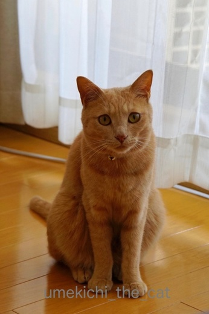
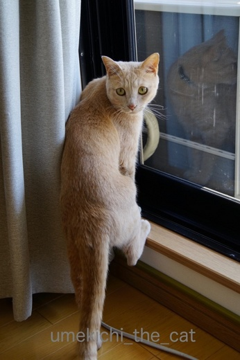
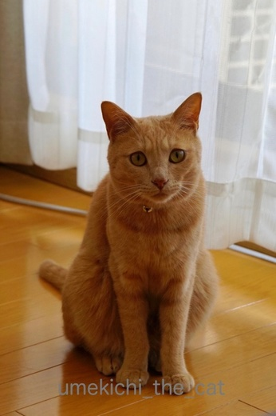
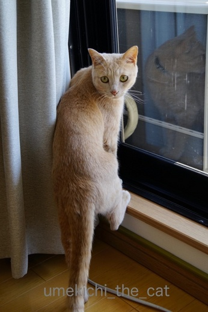

わしのあとについてくるんや〜 [梅吉]
おとーさんに熱い視線を送る梅吉さん。

ちょっとでも立ち上がる気配を見せようものなら

![[猫]](https://blog.ss-blog.jp/_images_e/101.gif) さっ、こっちやで
さっ、こっちやで![[黒ハート]](https://blog.ss-blog.jp/_images_e/136.gif)
ささっとベランダへ出るドアの方に移動。

ここをあけてわしのあとについてくるんや〜

なにやってるんや〜
ちゃっちゃとついてきてや〜
ものすごい催促をされます^^;
知らんぷりをしていると近くまで迎えにきてまたドアの方に誘導するという・・・
ちなみに私は誘われません。
おかーさんは付き合ってくれないとちゃんとわかっています。
日焼けしたくないからね〜。

ベランダに出ると花鉢の間の定位置へ。
こんな風にベランダで気持ちよく過ごせるのもあと少しの間でしょうか。
来週あたりから雨が降り始めそう・・・
それが過ぎたら日向のベランダには暑くていられません。
･゜ﾟ･*:.｡..｡.:*･゜ﾟ･*:.｡. .｡.:*･゜ﾟ･*･゜ﾟ･*:.｡..｡.:*･゜ﾟ･*:.｡..｡.:*･゜ﾟ･* ･゜ﾟ･*:.｡..｡.:*･゜ﾟ･*:.｡. .｡.:*･゜ﾟ･*･゜ﾟ･

ローソンのUchi Cafe SweetsとGODIVA の共同開発のショコラロールケーキ。
売り切れ続出！というネットニュースを見ましたが近くのローソンでは沢山置いていました。
しかも消費期限一日前なので20円引き＾＾

GODIVAの味だよね！とは思いませんでしたが美味しかったで〜す。
濃いめのコーヒーによく合います。
 ↑ガブッと一押し↑
↑ガブッと一押し↑
バグパイプありサンバありボン・ダンスありの不思議なパレードですっかり興奮した梅吉さん。
金魚すくいと聞いてジェットの勢いでばびゅ〜んと乱入します。
すくい網など使わずに素手で金魚をすくうと思われます。
このあとゴンゴンさんに叱られたことでしょう・・・・
会場をぶらぶらしてたこやき屋さんを発見！
なんと！！ダンゴのおっちゃんがたこやきを焼いています。
「あんたはまだ早い！」と言われちゃった梅吉さんでした＾＾
みなさんもzombiekongさんのパレード＆カーニバルに参加して見ませんか？
画像加工の機能は使い方がわからなかったりして全然使いこなせていないんですが楽しかった〜。
切り取った画像のふちの部分の処理をもうちょっとなんとかしたい・・・

ちょっとでも立ち上がる気配を見せようものなら

ささっとベランダへ出るドアの方に移動。


ちゃっちゃとついてきてや〜
ものすごい催促をされます^^;
知らんぷりをしていると近くまで迎えにきてまたドアの方に誘導するという・・・
ちなみに私は誘われません。
おかーさんは付き合ってくれないとちゃんとわかっています。
日焼けしたくないからね〜。

ベランダに出ると花鉢の間の定位置へ。
こんな風にベランダで気持ちよく過ごせるのもあと少しの間でしょうか。
来週あたりから雨が降り始めそう・・・
それが過ぎたら日向のベランダには暑くていられません。
･゜ﾟ･*:.｡..｡.:*･゜ﾟ･*:.｡. .｡.:*･゜ﾟ･*･゜ﾟ･*:.｡..｡.:*･゜ﾟ･*:.｡..｡.:*･゜ﾟ･* ･゜ﾟ･*:.｡..｡.:*･゜ﾟ･*:.｡. .｡.:*･゜ﾟ･*･゜ﾟ･

ローソンのUchi Cafe SweetsとGODIVA の共同開発のショコラロールケーキ。
売り切れ続出！というネットニュースを見ましたが近くのローソンでは沢山置いていました。
しかも消費期限一日前なので20円引き＾＾

GODIVAの味だよね！とは思いませんでしたが美味しかったで〜す。
濃いめのコーヒーによく合います。
バグパイプありサンバありボン・ダンスありの不思議なパレードですっかり興奮した梅吉さん。
金魚すくいと聞いてジェットの勢いでばびゅ〜んと乱入します。
すくい網など使わずに素手で金魚をすくうと思われます。
このあとゴンゴンさんに叱られたことでしょう・・・・
会場をぶらぶらしてたこやき屋さんを発見！
なんと！！ダンゴのおっちゃんがたこやきを焼いています。
「あんたはまだ早い！」と言われちゃった梅吉さんでした＾＾
みなさんもzombiekongさんのパレード＆カーニバルに参加して見ませんか？
画像加工の機能は使い方がわからなかったりして全然使いこなせていないんですが楽しかった〜。
切り取った画像のふちの部分の処理をもうちょっとなんとかしたい・・・

カフェオレ色の梅吉

梅吉 2023年8月10日 永眠


梅吉と出会った譲渡会

犬猫の理由なき殺処分ゼロ
妄想広告
UMEKICHI 光

爆発的に早い！
時々攻撃的！
Thanks to Mr.Boss365
爆発的に早い！
時々攻撃的！
Thanks to Mr.Boss365

梅吉君の力強い誘導…そのうち自分で鍵開けてサッシ開けて出て行きそうな勢いですね∑(ﾟДﾟ)
花の枝の陰が梅吉君の背中に落ちて、いい雰囲気。ゴハン3杯はいけますね。
ちぃさんてば、仕事が早いわっ！そうそうにパレード参加ですね！
いい具合に梅吉君がはまってます。やりたいって言いそう〜梅吉君、やりたがって断られてそう〜(*ﾟv`)ﾉ
by BillK-ko (2017-06-18 15:40)
お宅にもパレード来ましたか！！
それにして梅吉さんは関西弁が似合いすぎますね。
by じゅらまろ (2017-06-18 16:23)
ベランダに出ることをすっかり覚えてしまいましたね。楽しそうです。うちも出してやりたいけど屋根伝いにあちこち行けそうなので怖くてできません(-"-)（特にきなこ）
by palpal (2017-06-18 19:59)
梅吉さんの誘導っぷり♪最高ですねぇ～
誘われるとついて行きたくなります(#^.^#)
by きぃ (2017-06-18 20:32)
開けての誘導の仕方がわかりやすくて頭いいですね。
それに梅吉さんジェット推進付いてたんだ(!?) たこ焼きやりたいお顔も笑えるし、やっぱりお笑いなら梅吉さん!! ところでダンゴは1歳と8ヶ月です。オヤジ顔なだけです。
by zombiekong (2017-06-18 20:49)
梅吉さんも先導タイプですね！
ウチのも必ず前を歩きたがって無理にでも下僕を追い抜こうとします^^;
ついて行かなかったら慌てて戻ってくるの、可愛いですよね(^_-)-☆
梅吉さん、パレードに参加してる～♪
あの写真がこうなっちゃうんですね^^
by ゆきち (2017-06-18 21:06)
ついてこいニャ～。あります、あります。^^)
でも、いつもとは違う異常な事態を教えてくれることがあるので
いちおう付いて行って確認します。^^;
by yes_hama (2017-06-18 21:49)
画像、めちゃめちゃカワイイし、楽しいです～♪
by yuppie (2017-06-18 22:10)
なんとお茶目な梅吉さん、お尻に火が付いていますよ（笑）
たこ焼きが焼きたくてのスネ具合、なんという顔ですか（笑）
ローソンのショコラロールケーキ、少し前に食べました。
美味しかったですね。
by kiki (2017-06-18 22:15)
梅吉さんの「ここ開けてや」のポーズがツボりました♪( ´▽｀)
あぁ、その後脚が素敵（≧∇≦）
お父さんがちゃんと付いてきてるかどうか確認も怠らないとはさすがです( ^ω^ )
by ニッキー (2017-06-18 23:45)
ベランダの前で足をかけている姿
めっちゃかわいいｗｗ
おおお！画像加工ばっちりじゃないですか！
ばびゅ〜んと乱入、これもいいねー^^
笑ったわｗｗ
by リュカ (2017-06-19 10:09)
梅吉さん。
父の日で、おとーさんをベランダに誘ったに違いない！
モフモフの背中で、いつもありがとう、と言ってたのでしょう(^^♪
背中で語るとは……、なんて男前！＆照れ屋さん♡
うわっ、ローソンのゴディバケーキだ！！
これは食べなきゃ！！！！
by morichan (2017-06-19 11:56)
もうやだ～ｗ
お尻に火が付いてるし。
「たこやきはわしがやくいうたや～ん」のポーズ。
めっちゃいいね。笑っちゃったよ～。
素敵なコラボ(^-^)
コメ書いてたら掛かってきた夫の電話。
たこ焼き買ってくれたって。
ダンゴくんと梅吉くんのたこ焼きだといいな♪
by emi (2017-06-19 15:10)
梅吉さんの角刈り、チョット期待してました（笑）
by kiki (2017-06-19 15:27)
ベランダへの誘導はお誘い相手をきちんと分けているんですね。
学習能力高い子だわ♡
梅吉さんのパレード参加、上手ですね(n*´ω`*n)
by muku (2017-06-19 17:28)
BillK-koさん＞梅吉は不屈の根性を持っているのでそのうち開けるかもしれません！
ちなみに軽い網戸は開けますよ〜。網戸は全てストッパー止めですわww
あらあら＾＾写真の梅吉でゴハン３杯だなんてっ！
リアル梅吉だったらどのくらい進んじゃうのかしら〜。
ちなみに我が家は梅吉が酒の肴ですＯ(≧▽≦)Ｏ
きっと梅吉はすべてので出店で「わしにやらせてや〜」って言って
断られてる！うん、間違いない！！
じゅらまろさん＞今度はパレードに参加したい！と梅吉が言ってましたわww
「ひょうじゅうんごとほっかいどうべんもはなせるで」by梅吉
palpalさん＞あわわわ、屋根伝いは怖いね〜。追いかけるわけにもいかないし。
きなこちゃんすばしっこそうだし！
ナノくんは・・・どこにも行かずまったり風景を眺めていそうね(^_－)☆
きぃさん＞「きぃさん、わしについてきてや〜！まってるで〜」by梅吉
一日中ベランダに付き合わされますよ〜(^▽^;)
zombiekongさん＞ダンゴくん梅吉より年下でしたか！(⌒_⌒;
中高生の時、学年に一人はいた
「おやじ」「おっさん」とあだ名されるタイプ！？
そうか〜、たこ焼きダンゴくん、別バージョンも出来そうですよ(≧艸≦)
ゆきちさん＞ヒエラルキーの頂点に君臨するもの、下僕の後は歩けない！
と気高いお気持ちの表れなのでしょうか＾＾
その割には「ひとりにせんといて〜」と下僕を迎えにきますよねww
パレードに参加してスットコランドの皆さんに遊んでいただきました。
次は夏祭りかしら〜(≧▽≦)
yes_hamaさん＞アズ氏は異常事態を教えてくれるのですかΣ(ﾟ◇ﾟ；)
まるで名犬ラッシーのようではないですか！
梅吉はキッチンとベランダの方向にしか誘導してくれません^^;
yuppieさん＞zombiekongさんの楽しい画像に参加させていただきました♪
作ってる過程も楽しかったですよ〜。
kikiさん＞角刈り・・・チャレンジしてみたのですが、なんだかな・・・
の出来だったのでボツにしちゃいました。
もう少し修行を積んで再チャレンジしれみようかな。
梅吉がアホみたいに走り回っているときはお尻に火がついているんですよ＾＾
画像で表現できました！！
スネ顔は無修正ですよ〜。変顔の在庫なら山のように・・・^^;
ニッキーさん＞そうそう！あの方足乗せが「わしはそとへいくんや！」と
やる気満々な感じで私もツボです＾＾
誘導＆確認ももちろんですが、しらんぷりする下僕の足を「ガブガブ」する
教育的指導もわすれません (⌒_⌒;
リュカさん＞片足っていうのが良いでしょうww
外に出る！という強い気持ちと次のアクションを連想させる足・・・
とでも申しましょうか・・・
梅吉が家の中走り回っているとき本当にこんな感じなんだからっ！
ばびゅばびゅばびゅ〜〜〜んよ(≧▽≦)
morichanさん＞おお！梅吉の父の日サービスとは！
そして背中で語る漢、梅吉・・・・(꒦ິ⌑꒦ີ)ええ話や〜・・・
ゴディバケーキぜひぜひ＾＾期間限定でしたよ！！
emiさん＞お尻に火がついているのは梅吉の日常の一コマ！って感じです。
ほんとにこんな感じで走り回るんだから！
我が家のフローリングや畳は傷だらけですわww
へんてこりんなポーズ＆変顔も得意技です＾＾
たこ焼き美味しかったですか〜。
肉球印があったらそれはダンゴ＆梅吉印のたこ焼きやで〜。
mukuさん＞自分に都合のいいことだけ異様に学習能力が高いのですよww
パレード参加はとっても楽しかったです(๑˃̵ᴗ˂̵)و
by ちぃ (2017-06-19 18:52)
ほしいモノを真摯に求める瞳にはかなわん・・・。
(((((（*￣３￣）
by Ginger (2017-06-19 19:08)
Gingerさん＞本当に・・・こんなまっすぐな瞳で見つめられたら
従わずにはいられません〜 (^▽^;)
にゃんこは自分の武器をよ〜くわかっていらっしゃる・・・
by ちぃ (2017-06-20 15:12)
熱い視線！
そしてこの筋肉の浮き出たあんよの躍動感にこもった意志の力が＾＾
ばびゅ～んと乱入＆言うたや～んのポーズも最高～～！！！
役者ですねえ＾＾
by sana (2017-06-20 21:11)
sanaさん＞熱視線とはこの事ですよね〜。
小説で「皮膚に焼け付くような視線を感じた」なんて読み、
「そんなことあるかい！」って思っていましたが、
梅吉の視線、肌に焼け付きます・・・^^;
変顔＆変ポーズの写真は山のようにあるので
他の役にもチャレンジしてみたいと思います！
by ちぃ (2017-06-21 09:01)